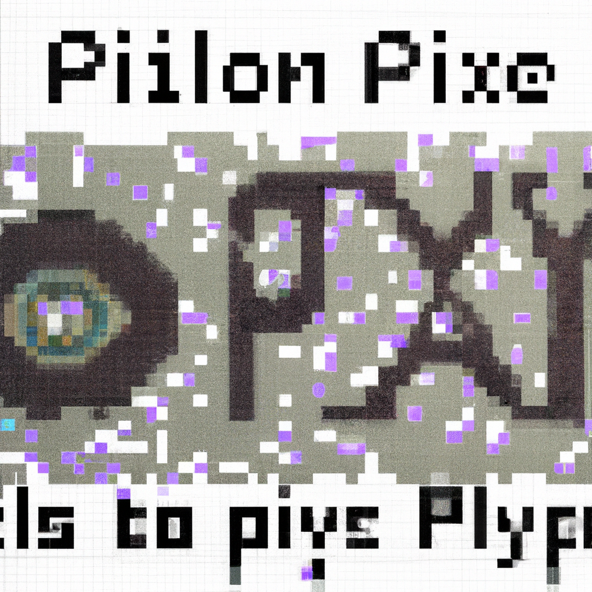

The future of Python and AI
Python is an incredibly versatile programming language and has been a key player in the development of Artificial Intelligence (AI). As AI continues to evolve, so does the need for more proficient and advanced programming and Python is at the forefront. Python is being used in many different fields such as machine learning and data science, and it is continuing to become even more popular.
AI is becoming increasingly prevalent in our lives, from autonomous cars to facial recognition systems. AI is being used in everything from healthcare and finance to entertainment and education. Python is the perfect language for developing these applications, as it is easy to learn, fast to work with, and offers a wide range of libraries and tools that can be used to create powerful AI solutions.
Python is also becoming a major player in the development of machine learning algorithms. Machine learning algorithms are used to create systems that can accurately identify patterns in data, allowing them to make decisions or predictions. Python is the ideal language for developing these algorithms, as it is both powerful and easy to use.
The future of AI is bright and Python is set to be at the forefront of the development process. Python is the perfect language for developing robust AI applications and its popularity is only continuing to grow. With the right libraries and tools, Python developers can create powerful AI solutions that will revolutionize the way we live and interact with technology.